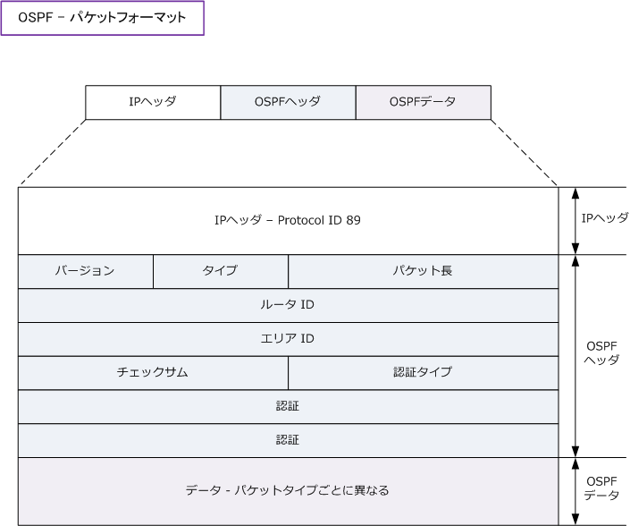
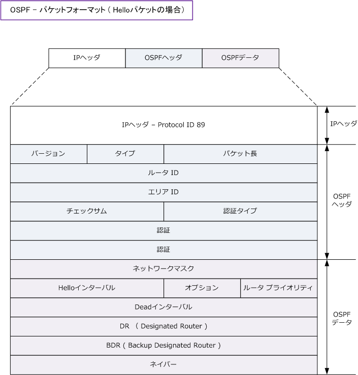

OSPF - Packet Format
OSPF - パケットフォーマット
OSPFのパケットはIP上のプロトコル番号 89 を使用し、IPパケットで直接カプセル化されて送信されます。 トランスポート層プロトコルにTCP/UDPを使用しませんが確認応答（Ack）により信頼性を確保しています。

| OSPFヘッダ | 説明 |
|---|---|
| バージョン | 使用しているOSPFのバージョン。IPv4なら 2、IPv6なら 3 の値。 |
| タイプ | OSPFの5つのパケットタイプ1 ～ 5。Helloパケットの場合は 1 の値。 |
| パケット長 | ヘッダを含めたOSPFパケットの長さ。 |
| ルータ ID | ルータを一意に識別する32ビット値。デフォルトでは有効なI/Fで最大のIPが選択される。 |
| エリア ID | Helloパケットが送出されるインターフェースが所属しているエリアの32ビット値。 |
| チェックサム | エラーチェックのためのチェックサム計算に使用。 |
| 認証タイプ | 認証なしなら 0 、平文認証するなら 1 、MD5認証するなら 2 の値となる。 |
| 認証 | AuType 1 または 2 の場合はパスワード情報が含まれる。2 ならKey IDも含まれる。 |
OSPF - 5種類のパケット
OSPFでは以下の5種類のパケットを隣接ルータとやり取りして、動的にネイバー関係を確立した上で、 ネイバーテーブル、LSDB、ルーティングテーブルを最新に保つことができます。
| タイプ | パケット名 | 各パケットの説明 |
|---|---|---|
| 1 | Hello | Helloパケットは、ネイバーを検出するためのパケット。ネイバーを検出してネイバー関係を確立した後の キープアライブ（ネイバー維持）としても使用される。マルチキャスト ( 224.0.0.5 ) として送信される。 |
| 2 | DBD | DBD（Database Description）パケットは、自身のLSDBに含まれているLSAのリスト一覧。ネイバー ルータとこのDBDを交換し合うことにより、自身に不足しているLSAが何なのかを認識することができる。 |
| 3 | LSR | LSR（Link State Request）パケットは自身のLSDBに不足しているLSAがあった場合、ネイバールータに その特定のLSAを要求するために使用される。 |
| 4 | LSU | LSU（Link State Update）パケットは、LSRによりネイバーから要求されたLSAを送信するために使用。 |
| 5 | LSAck | LSAck（Link State Acknowledgement）は、LSUを受信したことを通知するための確認応答として送信。 |
OSPFのパケットフォーマットの解説で「OSPFデータ」部分は、パケットタイプごとに異なると説明しました。 それではタイプが1の場合（Helloパケットの場合）のOSPFのパケットフォーマットを詳細に見てみましょう。

| OSPFデータ | 説明 |
|---|---|
| ネットワークマスク | Helloパケットを送出するインターフェースのネットマスクの情報が含まれる。 |
| Helloインターバル | OSPFルータがHelloパケットを送出する間隔。デフォルトで 10秒 または 30秒 の値。 |
| オプション | 8つあるオプションフィールドのうち、スタブエリアを意味するフラグ値を格納。 |
| ルータ プライオリティ | DR/BDRの選択時に使用される 8 ビット値。最高値は255。0 の値はDR/BDRになれない。 |
| Deadインターバル | ネイバールータがダウンしたとみなす間隔。常にHello間隔の4倍となる。 |
| DR | DRのIPアドレス。そのネットワーク上でDRが存在しない場合は 「 0.0.0.0 」 値となる。 |
| BDR | BDRのIPアドレス。ネットワーク上でBDRが存在しない場合は 「 0.0.0.0 」 値となる。 |
| ネイバー | ネイバー関係が確立済みである全てのネイバールータのルータIDの一覧。 |
OSPFネイバーを確立するためには以下の 7 項目を ネイバールータと完全に一致させる必要があります。
① エリアID ② 認証 ( 認証が有効な場合 ) ③ ネットワークマスク ④ Helloインターバル ⑤ Deadインターバル ⑥ スタブエリアフラグ ( オプション値 ) ⑦ 隣接するI/FのMTUサイズ
CCIEを目指すならこの内容は非常に重要な項目。